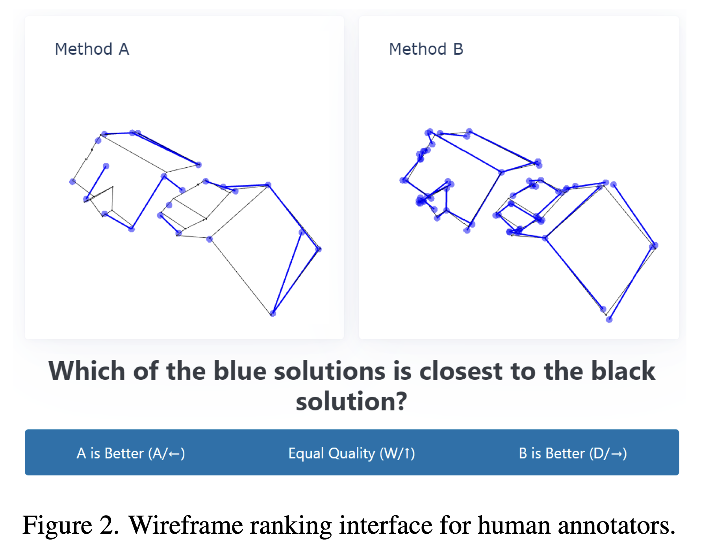
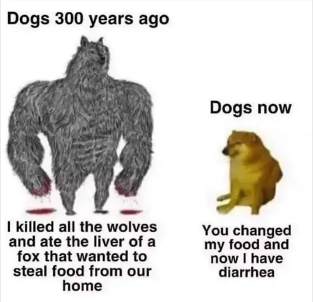

There is a difference between feeling productive and actually producing something.
There is even bigger difference between producing something, and producing something useful. And on the orthogonal axis, there is a work which squeezes you like a lemon, and the one, which makes you happy.
I’d like to share my journey with AI, covering work at company – as much as I can talk, work at university and personal use, hoping it could be useful for you.
Disclaimer first - my work is mostly computer vision R&D, including training deep learning models, assembling them into pipelines, data cleaning and occasional demo-ing. I don’t do backend or frontend.
StackOverflow on steroids
Like many others, I started with ChatGPT web usage, somewhere in 2023 with questions like “How do I create 3d Line plot with plotly?”
That helped me a lot - I am not good in interactive demos and web-stuff even though I constantly use them for the work. Yet, I could not call this transformative or improving my productivity — all those things I still could solve on my own and not that much slower. Yes, my demos would be uglier, yes, more time for debugging, but nothing dramatic.
Demos, boilerplate and constant fixing
The first “enablement” feeling soon after - I needed to make iPhone capture app for some demo.
ChatGPT not only created some code for me — that I could do via copy-pasting from tutorials, but found the problem with tutorial I was following: my XCode version was different, and the menu items have changed their location. The process was still painful, but at least I had a good helper.
2024 was kind of the same — occasional questions, debugging, maybe code optimization. All good, but I had to manually copy/paste, fix mistakes, etc. It was still kind of small extension, which still felt good. Nothing to write home about.
Then Cursor came. You don’t need to copy-paste anything anymore, although highlighting context for the question/task was super important. The brightest experience was the work on our ICCV 2025 paper about wireframe metrics.

The paper idea was to ask modelers which roof wireframes look closer to the ground truth and then run bunch of metrics to figure out, which of them are aligned with human judgement the most. This required to implement many metrics from scratch, which was done with help of Claude. This was an enormous work, but unfortunately, there were issues.
First, the Claude-2024 written tests were mostly smoke or useless. Second, there were mistakes in implementation, uncaught by the tests. Finally, the implementation was prohibitively slow for the quick iteration.
We have used AI to solve it - in a very precise direct fashion. First, the numerical, hand-derived unit-tests. Second, fix/optimize every function separately, focused. It faster than doing it by hand, but required a lot of focus. Each attempt to let the AI alone to “fix the problem” was a failure.
Next thing, which delivered a different experience, was Collada DAE parsing optimization for my custom 3D format convertor. Collada DAE is 3D asset format – a simple XML, easily openable by Blender and Apple Preview (until the last MacOS update, at least). There is also an official pycollada python library to parse it.
But the parsing it is not that fast. The good thing — pycollada is open source library, we can optimize it and make a PR into upstream. That’s the first time agents in autonomous loop were working well. There is also no problem with unit-tests — pycollada already provides them, as well a reference implementation.
The profiling and optimization turned out harder than I expected - the model and agents relied on its prior knowledge of the library and its weak spots, so tried to optimize the same things over and over again. It also over-used profiler and under-used simple tools like timeit. In the end of the day, the following solution worked out well: I did the global profiling, and made decisions about which hot spot to optimize, and the model focused on the narrow optimization sprints. We delivered 20% speed-up for typical 3D model DAE files parsing and ~50% speed-up for low-poly ones. PRs: 1, 2
What I have forgot to mention, that so far all those experience came with the sense of accomplishment and satisfaction. I did high level planning and decision making, low-level coding, and used AI to help with unknown parts for me, like implementing things in new languages, doing parsing work (I HATE this part of working with data), etc.
The handling parsing was probably the most enabling thing so far for me. I wouldn’t dare to write a format convertor on my own - not because I am not capable of - but because I would be making tons of mistakes and most importantly bored to death.
Sinister Superpowers
The next step was Claude Code + superpowers — kudos to Manlio for introducing me to them. With help of them, the development of my supporting libraries and models was faster than I ever could do on my own and more robust — the number of tests were enormous.
Claude Code + superpowers helped me to write some custom software from scratch – think about the vibesac I did for ICCV talk, but 10x more complex. That was enormous project, which also required a lot of trial and error, mostly in prompting and formulating what to explore. While Opus was clever enough to implement cool stuff, speed-up directions it explored often were pretty wrong. What helped, is to ask it to impersonate John Carmack, and that was a breakthrough in speed. I also used ChatGPT to balance out Claude occasional blindness.
I also started to give it images as debugging tool - like “see that image, it should have this thing on the left, not on the right”.
That was next enabling moment - now I could tackle hard technical tasks, not just boring to death tasks. Thanks to the said software from above, right now my flagship model is better, than two specialized sota models. It was also time, I started to pay for Claude for personal usage — for the Claude Code — in additional to ChatGPT. I started to implement one research idea with help of it.
The development went well, so did my productivity. My mental health - not so much.
The idea of “iterate on the spec, then hand-off to the agents” never worked to me — long sessions usually meant wasted time and tokens. I had to baby-sit ideas and experiments, answering new questions - on the 10-20 min basis. That is long enough to be distracted, but not long enough to do something else meaningfully. I tried to work on something in parallel - even more exhausting. I played bullet check in the waiting time - I lost 250 rating points.
While the code and feature grew, I didn’t have any sense of accomplishment — only emptiness. I was not able to keep up with arXiv papers - my brain was completely drained. Morning sessions to read were fine — but only when I started my day with the papers, not code. Doing code by hand was not an option either - I am really not good at low level numba/C code. Distractions like working on CVPR S23DR Challenge were weird. On the one hand, they helped with sense of accomplishment and some work done manually. Being able to deliver something in a short term, while main work things were cooking, also helped. But on the other hand, that meant EVEN MORE context switches, more tasks to keep in mind.
Remember that research idea on the personal side? I dropped it, tired of baby-sitting.
I was counting on vacation to breathe.
Light again?
Vacation helped, but was that for a long? Fortunately, something else happened as well — Fable was un-banned by US government. That is the model I was using almost exclusively last several weeks, and that was a game changer.
First and foremost it was able to work on their own. If previous models were like dogs now, the Fable was like dogs 300 years ago:

To give you few examples:
while the my model was training using specific branch of one python library, I forgot about that and started to work on another feature in the same dir. Fable caught the problem with training, understood the cause, and MADE ANOTHER LIBRARY CLONE TO SUPPORT THE TRAINING. All those unprompted.
when I asked it to release the next model version to the internal repo with benchmark and compare to previous best, it figured out the dataset on its own, checked if there is any overlap between test and training set for all models, adapted the evaluation scripts for all models including some recent CVPR stuff (absolutely different from my model in output format), made nice table and uploaded.
during a brainstorm, it recognized a licensing constraint — we needed to inference on data we couldn’t train on — found 27 open-license alternative sources, ran the filtering, and assembled a training dataset.
Basically, that was the first time, I could genuinely focus on the high-level task, delve into details myself only when it is really needed. I started to read papers again. I am paying for Claude Max for personal use and we are doing kornia audit and overhaul right now.
I started to scope more impactful and ambitious work than any time before, and genuinely excited about it. I still feel mental tiredness after the day of work, but now it is the kind of “I was playing chess whole day”, not “I was watching reels whole day” kind of tiredness.
Finally, I feel that AI is a force multiplier, not “small addition”, or “eating my brain”.
To achieve that, besides the Fable itself required to change how I am thinking about the task, how much context I give, and which context I do NOT give to not bias the model first. For example, previous experiments results – models trust them too much, if the info comes from the user. If it comes from the journal log from itself, model can spot problems with them and propose new, cleaner, hypothesis. On the other hand, having practical computer vision knowledge still helps to judge ideas better. And - more importantly - to quickly understand when something is going wrong.
To trust the model, and to learn where I cannot trust it. The model is great at designing inspection tools and metrics – better, than I am. Images, on the other hand, are still the weak point. Recently Fable told me that new algorithm helps, judging from the images and metric. It was not - it was making everything worse. Nor can you trust it without full review. Kornia audit - a small PR of documenting the conventions (and another one ) - took seven review waves from 5.6 Sol and another Fable 5 instance until the convergence – all of that with green CI throughout.
Also, the new worry came - I am probably over-spending my token limit. Should I try to cut? Mindfully select the model? I tried to work the same high-level way with Opus 5 – it was terrible. Opus 5 twice hit 1M context limit and had to compact the conversation – without finishing the work. Fable did the same task with 500K tokens or so. Going back to the Sonnet-on-Superpowers time? Hell, no. So my hope is to prove that the impact worth the cost. But that is a good problem to have.
The daylight is bright again, and I may not only work, but also plan, think and dream. Will see how it goes.
Thanks to Olya, Anastasiia and Ian for the feedback on first drafts of the post.